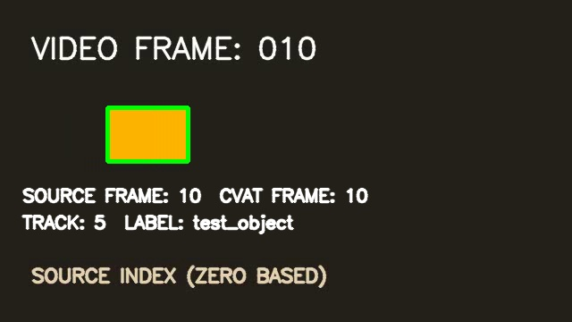

An export can be valid and still be wrong.
Annotation files may open successfully even when frame indices, visibility boundaries, or geometry have shifted. This small experiment tests what survives the full journey from a source CVAT task, through video XML, into a clean task.
The workflow uses Python and the CVAT API. The images below are saved evidence from the recorded run, not a live CVAT session.
Two tasks. An independent comparison.
Track IDs are not assumed to survive. CVAT can renumber tracks during import. The validator compares the annotation’s geometry and timing instead of treating an internal ID as stable identity.
Inspect the frame evidence.
Select a sampled frame, then compare the source image with the re-imported annotation overlaid on it.

Four offline CI tests separately check that the saved JSON, XML, geometry, and published evidence remain consistent. A fresh live result requires running the experiment against a configured CVAT server.
Validate the data before trusting the model.
This experiment makes a small, important boundary testable. The same habit applies to larger workflows: define frame conventions, check imports against independent evidence, and preserve the results alongside the code.
To extend the experiment, add more tracks and visibility cases, then test other annotation types against explicit expectations.